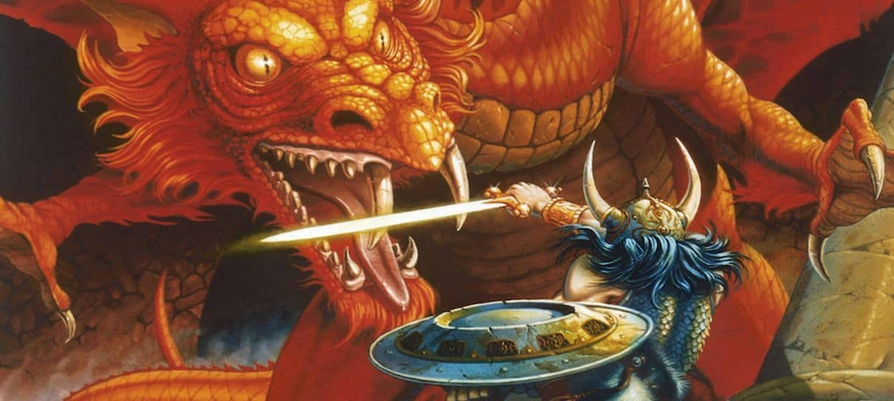

Rpg de mesa, é um jogo que lembra muito os clássicos jogos de tabuleiro, porém com possibilidades mais amplas. Do inglês a sigla R.P.G. tem o significado de "Role Playing Game", um jogo de interpretar papéis. Nesta ocasião o jogador não é um mero pino andando nas casas de um tabuleiro, ele interpreta um personagem, com emoções, falas, tendências, ideais, vínculos e objetivos pessoais. Por conta da sua natureza tão dinâmica, o RPG necessita de uma figura conhecida como mestre do jogo. Este indivíduo age como um narrador dos contos e como um juiz mediador das ações realizadas pelos personagens do grupo de acordo com as regras. Ele compartilha elementos de jogos infantis e faz de conta. Como aqueles jogos, DnD é guiado pela imaginação. Trata-se de visualizar um grande castelo sob o céu de uma noite tempestuosa e imaginar como um aventureiro de fantasia poderia reagir aos desafios que aquela cena apresenta. Na página seguinte, vocês encontrarão alguns tópicos falando sobre RPG's e mecânicas e até mesmo uma tabela classificando os poucos tipos de RPG, para você que está procurando um estilo específico!
Dungeons and Dragons
Um jogo conhecido pela sua interpretação de papéis de alta fantasia, teve a sua origem nas mãos de Gary Gygax e Dave Arneson, sua primeira aparição se ocorreu nos anos de 1974 d.C. no reino dos Estados Unidos. Atualmente está na sua 5° edição, o game surgiu de uma variação do jogo de tabuleiro conhecido como WarGame. A criação do DnD é conhecida como a origem dos rpgs modernos e o início das indústria de rpgs. Aventureiros que se comprometem a se juntar a legião de jogadores de DnD, criam personagens que embarcam em jornadas imaginárias em que eles enfrentam monstros, reúnem tesouros, interagem entre si e ganham pontos de experiência para se tornarem incrivelmente fortes e poderosos a medida que a aventura avança.
